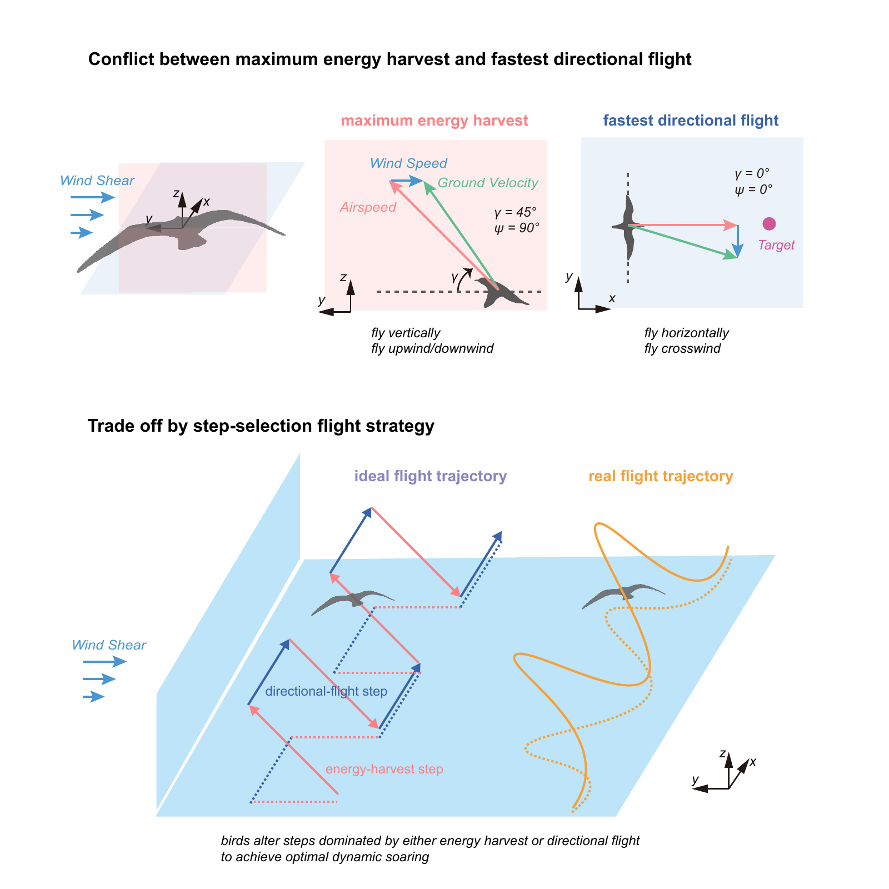

Energy harvest versus directional flight
I formulated a 3-DOF glider model and a direct-collocation optimal-control framework to treat dynamic soaring as both energy harvesting and directed navigation. The resulting flight envelopes quantify how harvested atmospheric energy must be allocated between sustained soaring and progress toward a destination.
- Mapped the Pareto trade-off between energy extraction and directional speed across wind conditions.
- Connected optimized trajectories with the step-selection behavior observed in soaring birds.